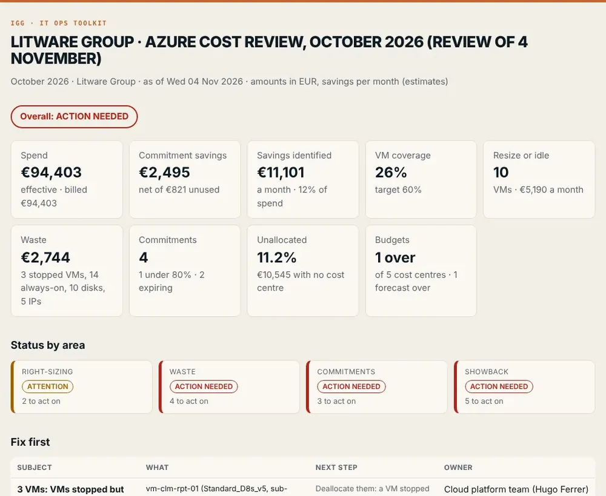

Una reserva para diez servidores de batch va al 55% desde que la mitad del batch se fue a otra plataforma, caduca en seis semanas y está configurada para renovarse sola. Es uno de los hallazgos de un mes de 94.403 euros en el que la revisión identifica 11.101 euros al mes de ahorro. Así lo detecta la revisión mensual de costes de Azure que acompaña a este post, una herramienta que se ejecuta con datos de ejemplo de un grupo asegurador inventado con cinco suscripciones y 133 máquinas virtuales, revisado el 4 de noviembre sobre octubre, con precios redondos inventados y los problemas puestos a propósito.
Una reserva es un compromiso de pagar capacidad por adelantado a cambio de un precio menor, y la herramienta considera que una por debajo del 80% de uso es dinero pagado por nada. Para cada reserva y plan de ahorro por debajo de su objetivo muestra el coste sin usar del mes, y para los que caducan en los próximos 90 días pide una decisión: renovar o cambiar. Cuando un compromiso se renovaría solo con un uso bajo, el hallazgo es crítico.
Tres máquinas de SQL Server que no pasan del 15% de CPU
Tres VMs de SQL Server en E16s_v5 llegan como mucho al 15% de CPU y usan un tercio de su memoria, porque se dimensionaron para una migración hace dos años. La herramienta busca VMs cuyo p95 de CPU, el nivel por debajo del que está la máquina el 95% del tiempo, y cuyo pico de memoria en 30 días caben en un tamaño menos dentro de la misma familia. Una VM cubierta por una reserva se marca, porque redimensionarla no ahorra nada hasta que la capacidad liberada se usa o se cambia.
Una VM de informes se apagó desde dentro de Windows hace tres semanas y se sigue pagando como si estuviera encendida, porque nadie la desasignó, es decir, nadie la liberó en Azure. Catorce VMs de desarrollo y pruebas funcionan todas las noches y todos los fines de semana. Los discos y las IP públicas de un proyecto de migración que terminó en agosto siguen ahí, sin conectar y sin etiquetar, y un disco sin conectar se paga entero.
Cuarenta VMs de producción con pago por uso y un 11% de la factura sin dueño
Cuarenta VMs de producción funcionan todo el mes con pago por uso mientras solo una cuarta parte del gasto en VMs está cubierta por un compromiso. La revisión enumera las VMs estables en pago por uso que cubriría un compromiso, pero solo después del desperdicio: comprar antes congelaría durante años el sobredimensionado de hoy.
En el showback, la práctica de enseñar a cada área lo que gasta, el 11% de la factura no tiene centro de coste, así que nadie pregunta por él. Un centro de coste cierra el mes un 14% por encima del presupuesto y va camino de repetirlo. El coste por usuario activo de los canales digitales sube un 15%, porque los usuarios han bajado y el coste no.
Cómo se calcula cada ahorro
Cada ahorro es una estimación mensual al ritmo de los últimos siete días, y el pack explica cómo se ha calculado. La mitad de vCPU en la misma familia es la mitad del coste de cómputo; un horario de oficina son 60 de 168 horas; un compromiso es una estimación por arriba que hay que contrastar con Azure Advisor antes de comprar. La cobertura se mide en horas, porque una VM de Windows o de SQL Server cubierta por una reserva sigue teniendo filas de pago por uso por su licencia.
Cómo usarlo con datos reales
La parte de costes es la exportación FOCUS, un formato estándar de costes, tal como la escribe Azure Cost Management: el coste efectivo para el gasto amortizado, el coste facturado al lado y la parte sin usar de los compromisos a partir de las filas marcadas como no usadas. El repositorio incluye un exportador de solo lectura en PowerShell para los módulos Az y las API de reservas y planes de ahorro, y funciona con Python solo con la librería estándar. Genera un informe con un veredicto del mes, un pack de ahorro para la revisión mensual de FinOps con una columna de decisión para cada redimensionado y cada compromiso, y ficheros CSV de redimensionado, desperdicio, compromisos, showback y acciones. Incluye 15 tests y un runbook. No es el panel de costes publicado al principio de la serie, que vigila AWS y Azure semana a semana: es la revisión mensual que viene después. El grupo asegurador y sus cifras son ficticios.
De dónde sale
La herramienta nace de trabajar con Azure Cost Management y el FinOps Framework, de optimizar costes de Azure con redimensionado y reservas, de implantar showback, chargeback y métricas de coste unitario, de ser responsable de un presupuesto de IT y de operar un entorno híbrido de AWS y Azure. Las lecciones que me quedo: un redimensionado lo decide el pico, no la media, y una VM parada no es una VM desasignada.
¿Quieres llevarlo a tu entorno o adaptarlo a tu caso? Escríbeme y lo vemos.
Tech Career Lab · newsletter
¿Te ha servido? Cada dos semanas envío una idea práctica para perfiles IT: LinkedIn, proyectos, networking y procesos de selección.
Apúntate y llévate las 33 ideas →